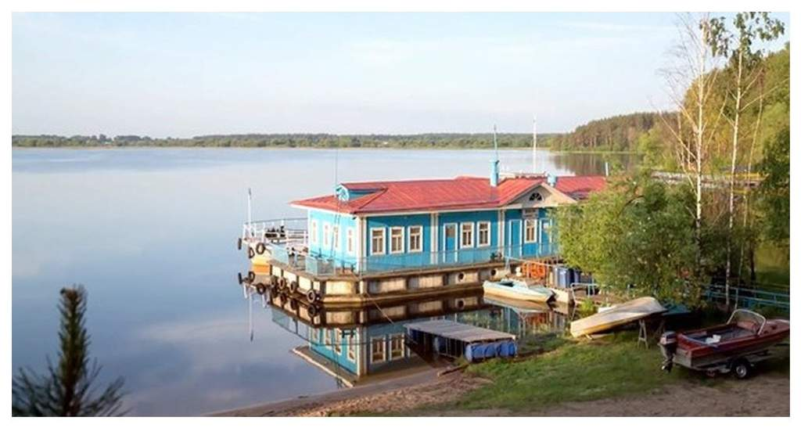
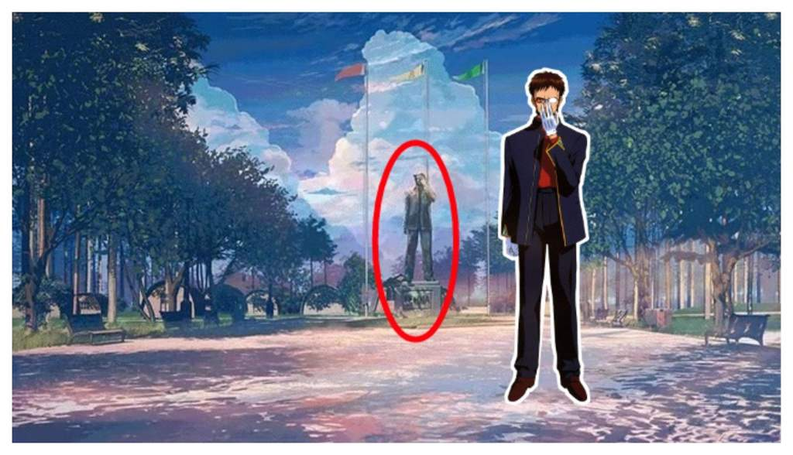
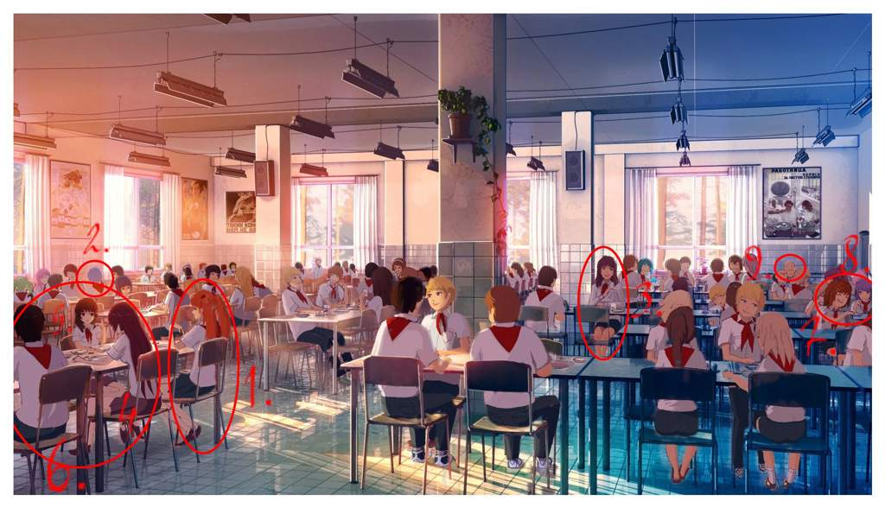
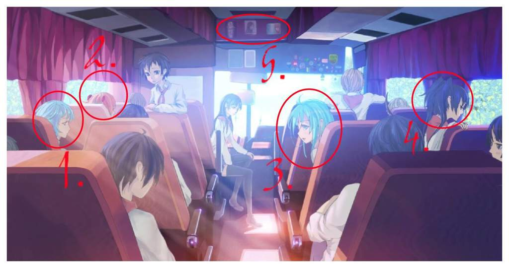
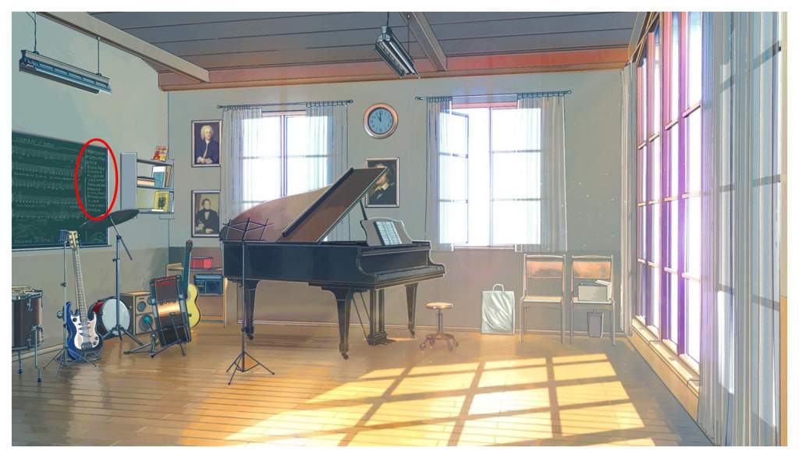

1. Сюжет
Главный герой игры — одинокий молодой человек Семён. Он проводит большую часть своего времени в интернете на анонимных
имиджбордах. В один зимний день Семён отправляется на встречу выпускников, садится на автобус № 410, где засыпает, а просыпается
у ворот летнего лагеря Совёнок, обитателями
которого оказываются пионеры. Его ждут семь незабываемых дней, итог которых будет зависеть от выборов игрока.
2. Предыстория игры
Изначально Бесконечное Лето задумывали как маленькую и простую игру без затей, похожую на Sakuru Taisen,
где фоны должны были быть слегка отфотошоплеными/перерисованными фотографиями. Все герои должны были жить в общежитии и лишь
библиотека и столовая должны были быть вынесены в отдельные здания на территории лагеря, но в финальной версии изменения коснулись
не только лагеря, но и самих персонажей:
1)Ульяна. Она должна была выглядеть в любой ситуации аккуратной , даже если она весь вечер проползала в лесу
в поисках потерянной заколки. Ее имя "Ульяна" отсылает к фамилии Ленина: "Ульянов".
2)Славя. У нее же должен был быть строгий и закрытый купальник, а не вот эта пошлость( `·´ )
3)Ольга Дмитриевна. У неё должна была быть пилотка вместо панамы, так же ей хотели сделать более длинную юбку и дать в руку свисток.
4)Имя Алисы является отсылкой к персонажу: Алиса Селезнева - главная героиня цикла детских фантастических книг Кира Булычёва
«Приключения Алисы»
5) Цвет глаз Виолы - это отсылка к персонажу Уруми Кандзаки - главной героине из аниме: "Крутой учитель Онидзука"
6) Имя Семёна произошло от слэнгового выражения "Same persons", означающая, что человек, которого так называли, на форуме
выдает себя за многих.
На каждую героиню планировалось по 3, а не 2 концовки, это - хорошая, плохая и нейтральная. Персонажей изначально тоже должно
было быть больше, правда все они были бы второстепенными. Это были бы охранники, работники кухни, местные ребята из деревни. Кстати,
Мику тоже хотели сделать второстепенным героем.
Кроме этого авторы хотели немного растянуть сюжет на более долгий промежуток времени. Примерно, недели на 2, как обычную
лагерную смену. При этом добавив тур-поход, поездку в ближайший город, пикник, спортивные мероприятия.
3. Предыстория Лагеря

СОЛ ВОЛГА - это прототип лагеря "Совёнок". Именно этот лагерь был выбран потому,
что у одного из авторов были подробные фотографии этого лагеря. Название лагеря тоже много раз менялось в
процессе разработки, но решено было остановиться на названии "Совёнок", так как в лесу вокруг лагеря СОЛ ВОЛГА
водится редкий вид крупных сов. А так же это отсылка к СССР и СОВКУ
Собрание в СОЛ ВОЛГА
4. Площадь

Статуя "Генда" является отсылкой к Генде Икаре из Евангелиона. Но так же это отсылка на известного человека с имиджборда,
который подписывался как
"Генда". Кстати, в одной из эмоций Шурик изображён также, как Генда из аниме
5. Столовая

1. Аска из "Евангелион"
2. Рей оттуда же
3. Мисато из того же аниме
4. Сенджогахара из "Monogatari"
5. Сенгоку с ней же
6. Арараги из того же аниме
7. Хирасава Юи из "K-On!"
8. Ханю из "Higurashi"
9. Толик. Просто Толик XD
6. Салон автобуса

Автобус №410 является отсылкой к рассказу про одноименный автобус, который забирает людей в ад.
1. Рей из "Евангелион"
2. Аска оттуда же
3. Эрио Това из аниме: "Denpa Onna to Seishun Otoko"
4. Black Rock Shooter из "Стрелок с черной скалы"
5. Арты
7. Салон Автобуса (ночная версия)

1. Аска превратилась в Банхаммер-тян
2. Эта девочка с черепами напоминает Криппи-тян - умершую и воскресшую Двач
3. Девочка с хвостиками является отсылкой к проекту художника фонов
8. Музыкальный кружек

Доска, представляющая собой сайт имиджборд с никами создателей игры.
( Из за плохого качества картинки я не смог понять что там написано и не смог найти сайт если я его найду то дополню )